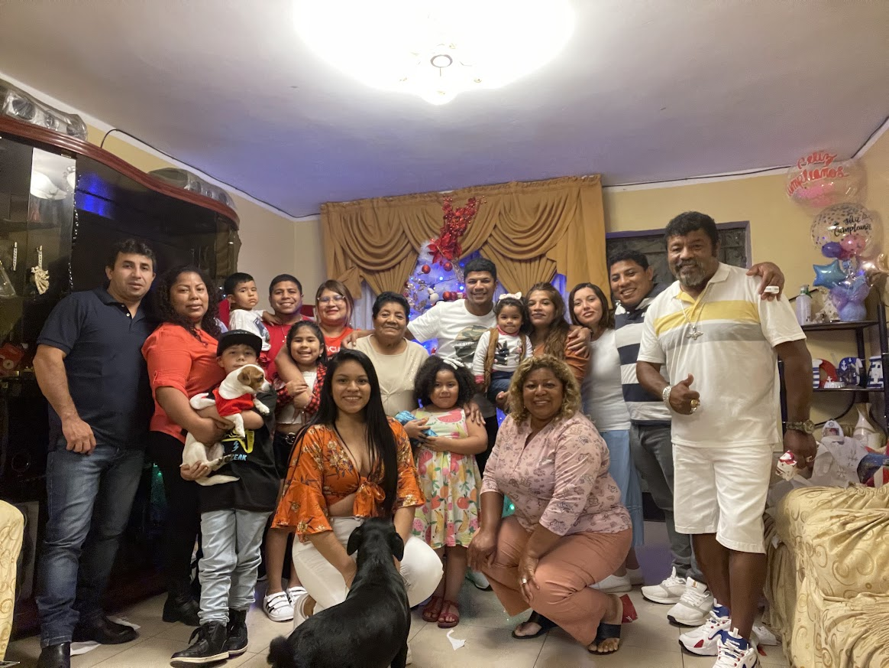

Nací el 26 de Agosto de 1998, en Lima, Perú. Viví en el distrito de Ate durante más de 20 años junto con
mi familia por parte materna, donde pasé gran parte de mi infancia y juventud. Primero se mudo mi papá a
España gracias a una gran oportunidad laboral. Seis años después, me mudé a España con mi mamá para
comenzar una nueva etapa de mi vida.
Este cambio ha sido una experiencia muy importante en mi vida, ya que he tenido que adaptarme a un nuevo
país, sus costumbres y una forma de vida diferente.

QUÉ HE ESTUDIADO Y DÓNDE
Estudié la carrera de Ciencias Forestales en la Universidad Nacional Agraria La Molina (UNALM), en
Perú. Esta carrera esta orientada en el estudio, manejo y conservación del bosque. Una de las cosas
que más
me gusta de esta profesión es aprender cómo aprovechar de manera sostenible los recursos maderables
que
nos proporciona el bosque.
Durante mi etapa universitaria también estudié Inglés y un poco de Italiano, y actualmente me
gustaría
aprender Francés.
Además, he realizado diferentes cursos relacionados con mi carrera, como:
ArcGIS
Rstudio
Tomografía Forestal
MI HISTORIA HASTA LLEGAR AQUÍ
Todo comenzó en Lima, Perú, donde fui construyendo poco a poco el camino que me llevaría hasta donde
estoy hoy. Después de terminar el colegio, me preparé en una academia para ingresar a la
universidad. En ese
camino, mi hermano me ayudó a encontrar mi rumbo y alcanzar mis metas. Lamentablemente, falleció,
pero tuvo un gran impacto en mi vida y me inspiró a seguir adelante.
A finales de enero de 2024 llegué a España junto con mi mamá, con mucha ilusión de comenzar una nueva
etapa en nuestras vidas. Poco a poco fui adaptándome a un nuevo país y una forma de vida diferente.
Después, regresé a Perú para culminar mi formación y compartir con mi abuela sus últimos momentos.
Más
adelante, volví a España junto con mi pareja para empezar nuestra vida aquí.
Actualmente, estudio Programación y Desarrollo Web en Factoría F5, adquiriendo nuevos conocimientos y
preparandome para nuevos retos.